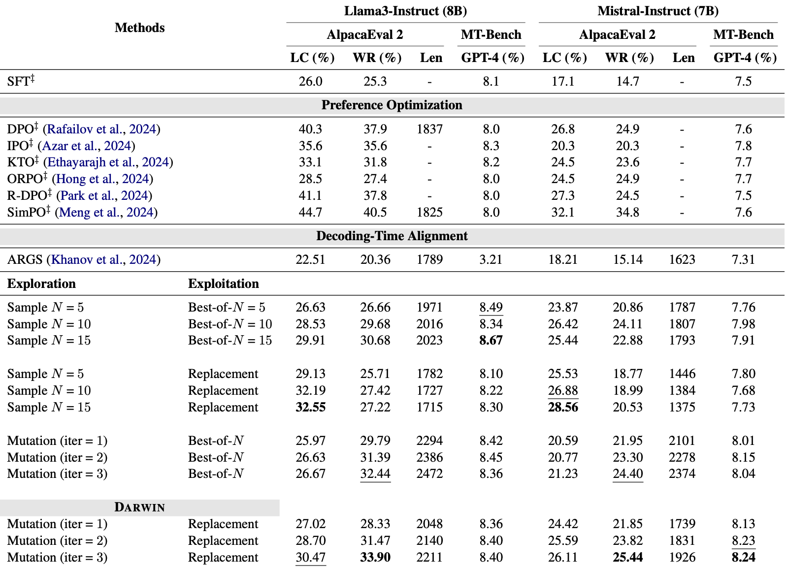

The Problem: Alignment tax
Common preference optimization techniques aligns LLMs with human preferences through fine-tuning. However, this process can potentially degrade the model's performance on certain tasks. Additionally, as user preferences evolve over time, the LLM may become misaligned with current user expectations.
Aligning without finetuning
Decoding time alignment achieves alignment by treating LLM generation as a reward-guided tree search problem. This approach trades inference latency for model alignment performance. Unlike previous decoding alignment methods that saw little benefit, this technique shows significant gains on instruction-following benchmarks.
What is Darwin?
Darwin is a decode-time inference technique that uses a reward-guided tree search framework to align the LLM. It balances exploration and exploitation of rewards by combining different search strategies, which helps minimize reward over-optimization and improves model alignment. The technique employs a pre-existing reward model from RewardBench to guide the tree search process.
How good is Darwin?
Experiments show that Darwin significantly outperforms other decode-time alignment techniques such as ARGS on two popular instruction-following benchmarks Alpaca Eval2 and MT-bench.
Additionally, Darwin outperforms direct alignment techniques such as DPO on MT-bench and achieve comparable performance on Alpaca Eval2.
Darwin is a new framework that frames decoding time alignment as reward guided tree search and combines tree exploration and exploitation in the search process. In particular, tree exploration can be defined as
Darwin outperforms direct alignment methods on MT-bench and achieve comparable performance to direct alignment methods on Alpaca Eval2.
Our results show that mutation is a robust exploration method, leading to discovering higher reward states, hence general improvement for WR.
Replacement Exploitation tends to generate shorter response compared to other methods, potentially due to exploring less states with exploitation.
Darwin combines the advantage of exploration and exploitation, achieving a more consistent WR and LC, demostrating the balance between both methods. Furthermore, with more iterations, Darwin's performance on both LC and WR consistently increase unlike other method that saturates quickly.
By adjusting the replacement periodm, we can control the level of exploitation in the tree search process, balancing the trade-off between exploration and exploitation. In our main experiments, we did not tune m. However, our ablation study shows that increasing the replacement period m leads to increases in both the LC and WC of Darwin.
@misc{hung2024reward,
title={Reward Steering with Evolutionary Heuristics for Decoding-time Alignment},
author={Chia-Yu Hung and Navonil Majumder and Ambuj Mehrish and Soujanya Poria},
year={2024},
eprint={2406.15193},
archivePrefix={arXiv},
primaryClass={id='cs.CL' full_name='Computation and Language' is_active=True alt_name='cmp-lg' in_archive='cs' is_general=False description='Covers natural language processing. Roughly includes material in ACM Subject Class I.2.7. Note that work on artificial languages (programming languages, logics, formal systems) that does not explicitly address natural-language issues broadly construed (natural-language processing, computational linguistics, speech, text retrieval, etc.) is not appropriate for this area.'}
}This website is created base on https://selfrag.github.io/ and nerfies.github.io